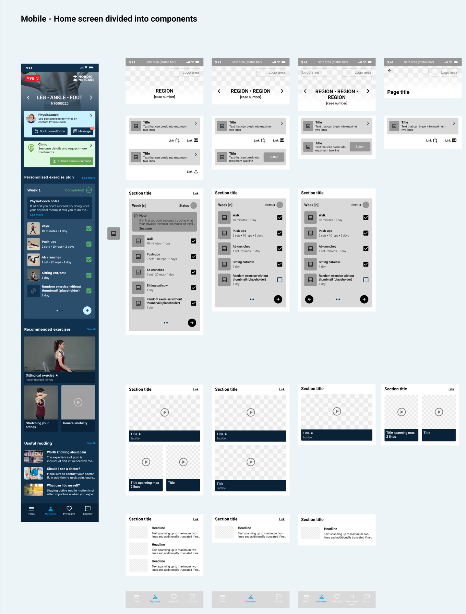
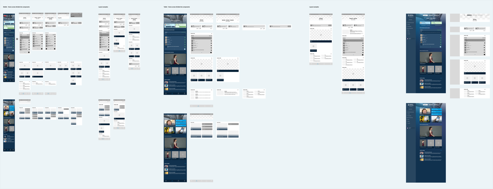
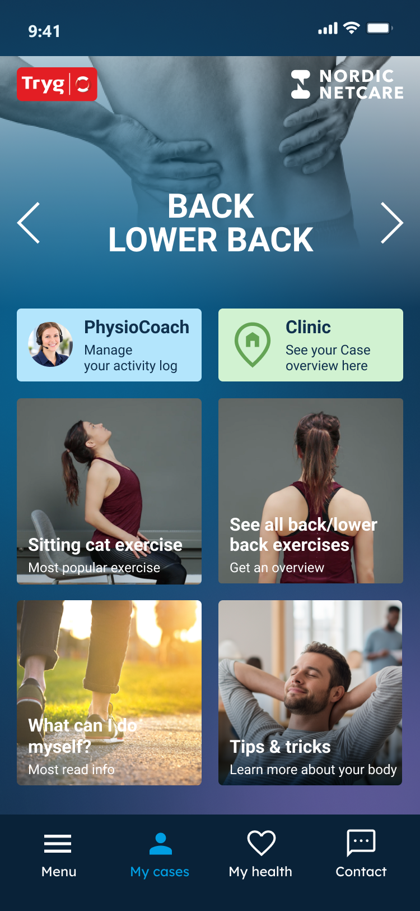
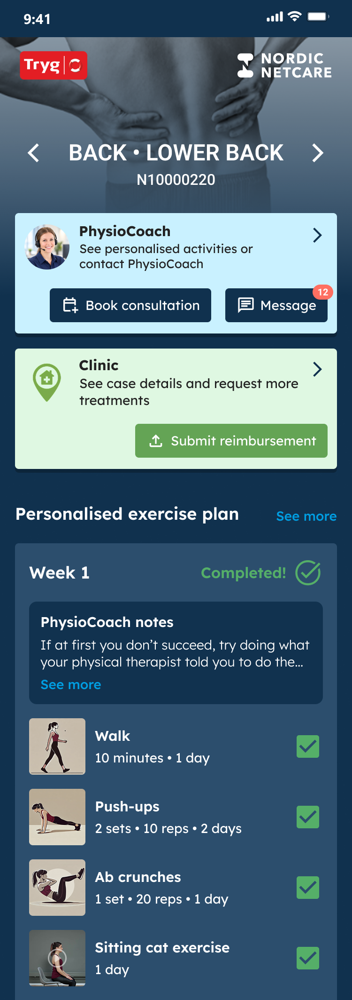
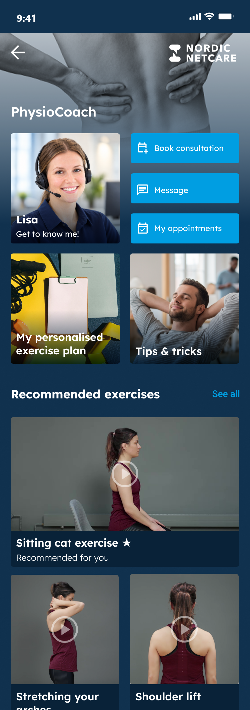
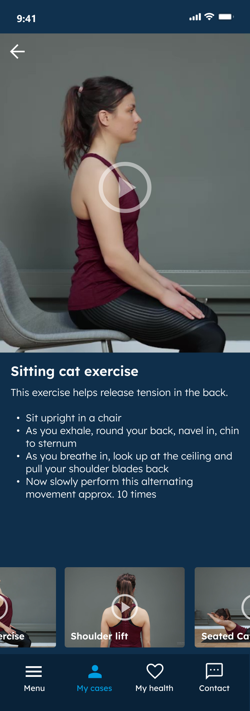

Case study 01 · Nordic Netcare
From hard-coded screens to a patient app built from parts
Nordic Netcare’s patient app had been designed screen by screen and built the same way. I broke the designs down into components on a shared grid and documented how each one behaves, so screens could be configured per insurance customer and assembled instead of built from scratch.
- Problem
- Hard-coded screens: every new component built from scratch, and the same app for every insurance customer.
- Decision
- Rebuild the designs as components on a grid with documented variants; cut a visual editor that would have cost more than it returned.
- Result
- Each insurance customer can have its own components, content and order, managed from the practice management system. Better information hierarchy, and customer-specific changes ship faster without risking the rest of the app.
01The problem
The app’s structure was hard-coded. Every screen had been designed as a whole picture, and every new component had to be built from scratch, even when it was a small variation of something that already existed. Adding content or a feature meant new design and new code each time.
That also made the app the same for everyone. Nordic Netcare serves patients on behalf of several insurance companies, and there was no way to give one of them a different set of features or content without building it separately.
02What I built
I deconstructed the existing designs and rebuilt them on a grid. Each screen became a stack of parts: a header that adapts to the patient’s case, cards that link onward, sections with a title and an optional link, exercise plans, video tiles and reading lists. For each part I showed how it behaves in different situations: one line of text or two, with or without an image, a button or a link, one item or several.
The same files served as documentation for the developers, so they could build each component once and assemble screens from it. Because the app is a progressive web app that runs in any browser, the files also set out how the layout responds on tablets and desktops.



Built
- Components on a shared grid, each with its variants: one card or many, with or without images, sections with or without a link.
- Per-customer configuration from the practice management system: which components are on, what content they show, and in what order.
- Responsive rules for tablet and desktop.
Cut
- A visual (WYSIWYG) editor for component details in the practice management system. It would have cost a lot to build for little return, and the goal was the opposite of free-form pages: a consistent structure whatever the content, whether a section holds one card or many.
03The result
The app became configurable. Each insurance customer can have its own layout: components switched on or off, and different content in them. That configuration, and the order of content on each screen, is managed from the practice management system instead of in code.
A side effect: the information hierarchy improved a lot. The old design leaned heavily on square block and card components for every kind of content. The new structure lets content be ordered by what matters to patients, or by what a particular customer wants to show.
Before

After

It also made shipping different configurations faster. Before, even a small change for one customer needed considerable custom development, with the risk of breaking the general app for the others.

